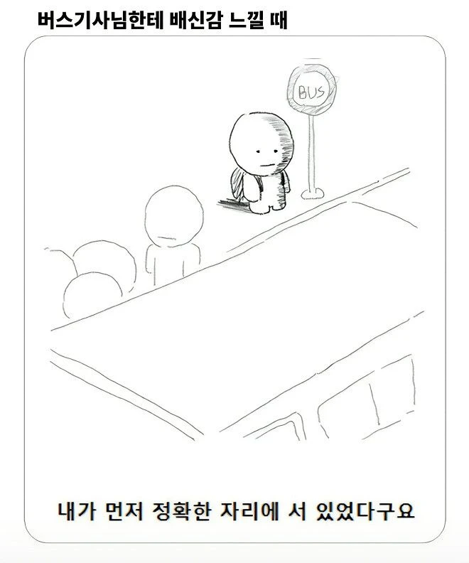

버스 배신감 느끼는 상황
댓글
버스 타고 내릴때도 있음ㅋㅋㅋ
내 앞사람이 먼저 타고 우산을 바깥쪽에 두고 접으니까 내쪽으로 물이 존나 튐
내릴때도 내 뒤 씨발련이 뒤에서 우산 팍 펼치니까 등쪽 젖고
가불기임 사실상
나는 중딩때 집에가는 버스 40분기다려서 버스정류장에 서있었는데 버스기사가 날못보고 지나쳐서 신호등에 멈쳐서 서있어서 열어달라고 갔더니 버스기사가 정류장아니라고 안열어준거.... 진짜 지금생각해도 버스기사 죽이고싶다... 안산 62번버스기사님 제가 그때이후로 항상 저주하고있습니다 제발 모든안좋은일과 항상 최악의 상황이 벌어졌으면 좋겠습니다.
안산이면 버스문 부수고 들어가서 기사 창밖으로 던지고 직접운전할거같은데 그정도는 아닌가보네
중딩이라 면허가 없어서 못했나봐 ...
지금 성인이된 개붕이라면 니말대로 했겠지 ..ㅋㅋ
성인이였으면 버스못가게막고 ㅈㄹㅈㄹ했을텐데 어려가지고 울면서 집에 1시간30분동안 걸어갔다....
그기사도 면허 없을껀데 있었어도 취소됐을거임
걍 상상대로 하지
뒤에까지 따라갔는데 문안열어주면 개빡침
내가 불쾌했던 썰은
바로 코앞이 정류장인데 신호 정지로 앞차가 안 나가니 기다리는 상황. 융통성 있는 기사라면 그냥 이때 열어주지만, 안 열어주심. 뭐 꼭 가까우면 열어야 한다는 원칙은 없으니 아쉬워만 했는데...
신호 초록불로 앞차가 앞으로 가니까 그제야 문 열어줌. 정류장까지 간 것도 아니고, 그 자리에서 그냥.
씨발 이럴 거면 왜 진작 안 열어준 거냐고 속으로 욕했음. 정류장 가는 방향으로 걸어야 하니 걷는 시간 늘고, 뒷차도 밀리고 뭐 하는 양반인지 모르겠더라.
그냥은 졸라 병신같네 ㅋㅋㅋㅋ
센스있는 분들은 뒷문 열어서 선두는 태워주시지 않나
화곡에서 자주 타는데 정류장에 서있으면 잘 지켜서 태워주더라 근데 뒷문으로 새치기 존나 해서 자리 뺏기는게 ㅈ같음
분명 버스 줄 서있었는데 많이 밀린것도 아니고 단 한대 밀렸는데 사람들 거기가서 문열어달라해서 냅다 다 태워주니까
짱나서 기사님한테 이럴거면 줄을 왜서냐 거기서 문 열어주면 어떡하냐 얘기하니까 그럼 문안열어줘요? ㅇㅈㄹ 하길래
그 뒤부터 줄 안서고 걍 버스 문열어주는거 보고 가서 걍 탐 ㅆㅂㅋㅋㅋ
이거랑 다른 이야기긴한데. 계단 없이 에스컬레이터만 있는 지하철 출입구에서 비올때,
시발 좀 에칼 벗어나자마자 멍청하게 서서 우산뒤적거리지좀 마라. 미리준비하고 딱펴고 나가 씨발 좀.
뒤에 사람 존나 줄줄이 내려오는데 씹년이 길처막고있어.
옆으로 짜져서 찾던가 비 처맞으면서 찾던가 씨발새끼들이
난 팍 미는건 아니지만 나오라고 밀고 지나간다 걍